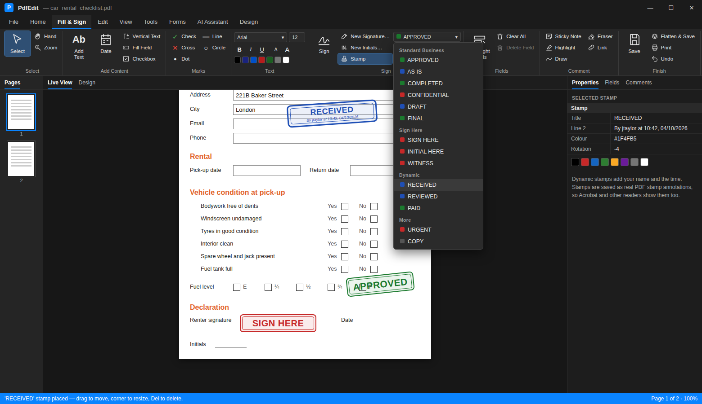

User guide > Using PdfEdit
Comments, stamps and links
Marking up text#
Highlight, Underline and Strikethrough work by dragging over the text. There are five highlight colours. They're saved as standard PDF annotations, so other readers show them too.
Sticky notes go wherever you click. You can give each one an author and a colour. The Comments panel lists every note, highlight and mark in the document, and lets you reply, set a status or jump to it.
Drawing#
The Draw group has a freehand pen, rectangles, ellipses, arrows, lines, clouds, polygons, polylines and callouts. Strokes are smoothed and keep their thickness when you zoom. The Eraser removes any drawing you click.
Under Measure you'll find distance, perimeter and area tools, in inches, millimetres, centimetres or points.
Stamps#
Choose a stamp from the list on the Tools or Fill & Sign tab, then click the page. The list follows Acrobat's groups and adds a few extras:
- Standard Business: Approved, As Is, Completed, Confidential, Departmental, Draft, Experimental, Expired, Final, For Comment, For Public Release, Information Only, Not Approved, Not For Public Release, Preliminary Results, Sold, Top Secret, Void
- Sign Here: Sign Here, Initial Here, Witness, Accepted, Rejected
- Dynamic: these add "By your name at time, date" under the title
- More: Paid, Urgent, Copy, Original, Do Not Copy, Internal Use Only, Sample, Received, Revise and Resubmit and around 30 others

Custom Stamp... adds your own wording to the list, and Remove Custom takes it off again.
A placed stamp can be moved, resized, rotated, recoloured or deleted like any other mark. When you save, it becomes a proper PDF stamp annotation.
Links#
Links already in a PDF work as you'd expect. Hover to see where they go, and click to open them. PdfEdit asks before opening anything outside the document.
To add a link, pick the Link tool and drag a rectangle over the text or picture. You can link to:
- a web page
- an email address
- a phone number
- another page in the same document
With the Link tool selected, existing links are outlined and clicking one lets you edit it. Right-clicking any link gives you open, edit, copy address and remove. Remove Links clears every link in the file.
Exchanging comments#
Comments can be exported to and imported from XFDF (Ctrl+Shift+E / Ctrl+Shift+I), the format Acrobat and Foxit use. You can also export a CSV summary for a spreadsheet.